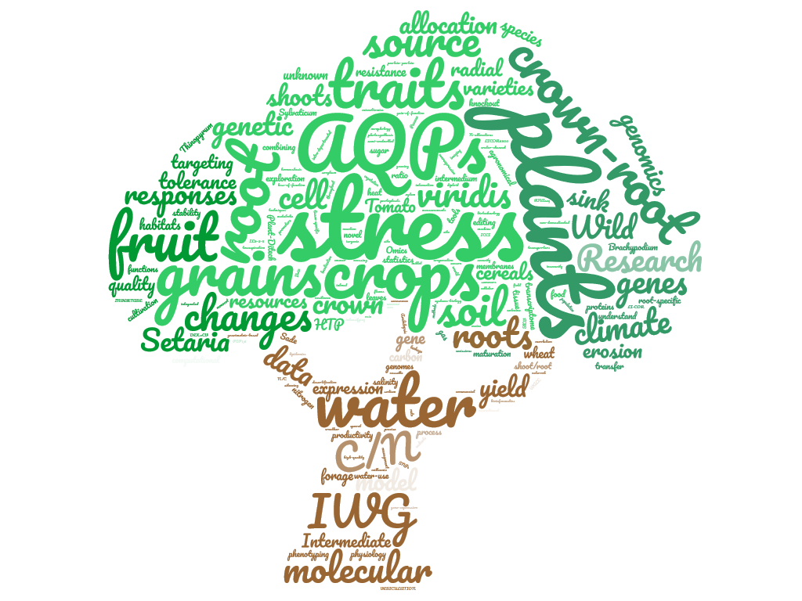

Sade Lab
The Molecular Physiology of Plants Lab at Tel Aviv University
Home
Research
Lab Members
Publications
Contact Us
Hi! Welcome to Sade Lab

Research Projects
Domestication and effect of climate change on
Thinopyrum intermedium
Systems Biology for wild wheat resistance
Chloroplast stability and source-sink in Tomato
Root hydraulics in varying environments in
Setaria viridis